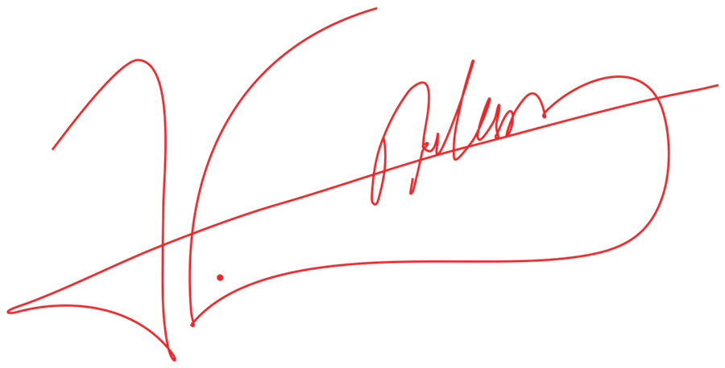

Bazı düşünceleri ve bazı duyguları kelimelerle anlatmak kolay değildir.
Belki de anlatmaya çalıştıklarımızın bir kısmı hep kalbimizde bir ateş, yolumuzda bir ışık olarak kalacak. Ve belki o ateşi ancak aynı ateşi içinde taşıyanlar görebilecek.
Kızılanka'yı, görmek istemediğimiz birçok şeyi gördüğümüz, yaşamak istemediğimiz birçok şeyi yaşadığımız ve bazı sorunların kendiliğinden ortadan kalkmayacağını anladığımız için kurduk.
Bu yolun kolay olmayacağını biliyoruz.
Büyürken zorlanacağımızı, projelerimizi gerçekleştirirken yorulacağımızı, zaman zaman başımızı ellerimizin arasına alıp ne yapacağımızı düşündüğümüz geceler geçireceğimizi de biliyoruz.
Ama kendimize hep aynı soruyu soruyoruz:
Hangi güzellik kolaylıkla ayakta kaldı?
İmkânı olmadığı için eğitimine devam edemeyen bir genci görmek istemiyoruz.
Vizesi kabul edilmediği için çalışmasını yurtdışında sürdüremeyen bir doktora öğrencisini görmek istemiyoruz.
Maddi imkânsızlıklar nedeniyle bölümünü bırakmak zorunda kalan bir mimarlık öğrencisini görmek istemiyoruz.
Bir fikri olduğu hâlde onu hayata geçirecek desteği bulamayan bir genci görmek istemiyoruz.
Yeteneği olduğu hâlde fırsatı olmayan, çalıştığı hâlde karşılığını alamayan, yalnızca doğru zamanda doğru desteğe ulaşamadığı için yolundan vazgeçmek zorunda kalan gençleri görmek istemiyoruz.
Ve yalnızca görmek istememekle yetinmiyoruz.
İnsanlar hayatlarında görmek istemedikleri şeyleri nasıl kaldırıyor, siliyor ve onlardan kurtuluyorsa; biz de gençlerin önünde duran bu engelleri aynı kararlılıkla ortadan kaldırmak istiyoruz.
Bir bursla.
Bir yemekle.
Bir yol biletiyle.
Bir bilgisayarla.
Bir staj imkânıyla.
Bir yurtdışı fırsatıyla.
Bir projeye verilen destekle.
Bazen yalnızca doğru insanları aynı masanın etrafında buluşturarak.
Çünkü bazen bir insanın hayatının yönünü değiştirmek için çok büyük şeyler gerekmez. Doğru zamanda uzatılmış bir el yeterlidir.
Kızılanka bu nedenle var.
İnsanların şeffaf, ulaşılabilir ve kendilerinden olan bir topluluğa ihtiyacı olduğuna inanıyoruz. Eğer ihtiyaç duyduğumuz zamanlarda böyle bir yapı karşımızda olsaydı, belki bugün Kızılanka'yı kurmak zorunda kalmayacaktık.
Ama yoktu.
Bu yüzden kurduk.
Kızılanka bizim için bir ihtiyaçtan doğmuş, sorumluluk üstlenmiş bir görev topluluğudur.
Gençliğin yanında duran değil, gençliğin içinde olan bir yapıdır.
Burada destek verenle destek alan arasında aşılmaz duvarlar yoktur. Bugün burs alan bir öğrenci, yarın başka bir öğrencinin yolunu açabilir. Bugün bir gence staj imkânı sağlayan üyemiz, yıllar önce aynı fırsatı arayan kişi olabilir.
Bizim için gelişim tam olarak budur:
Birbirimizi ileri taşımak.
Kızılanka büyüdükçe bu anlayış değişmeyecek.
Şeffaf kalacağız.
Ulaşılabilir kalacağız.
Gençliğin yanında değil, gençliğin içinde kalacağız.
Çünkü biliyoruz ki doğru olduğuna inandığımız bir yolda yeterince kararlı yürürsek, doğru olan eninde sonunda bizi bulacaktır.
Doğru olan bizi bulacak, dedik ya.
Geç kalma.
Bul bizi.
Belki de doğru olan sensin.
